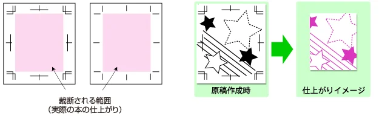
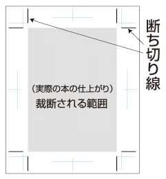
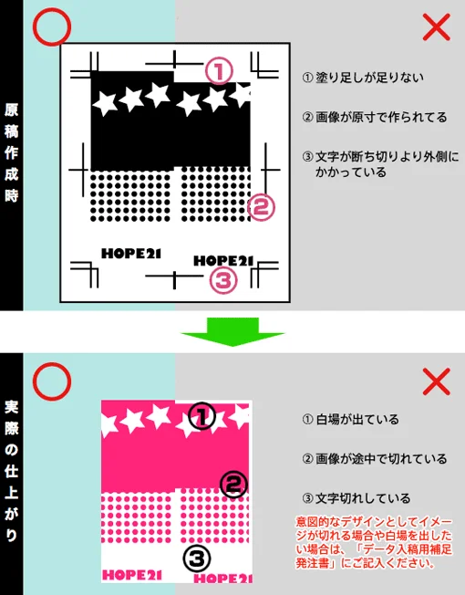
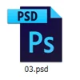
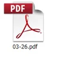
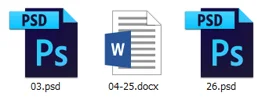
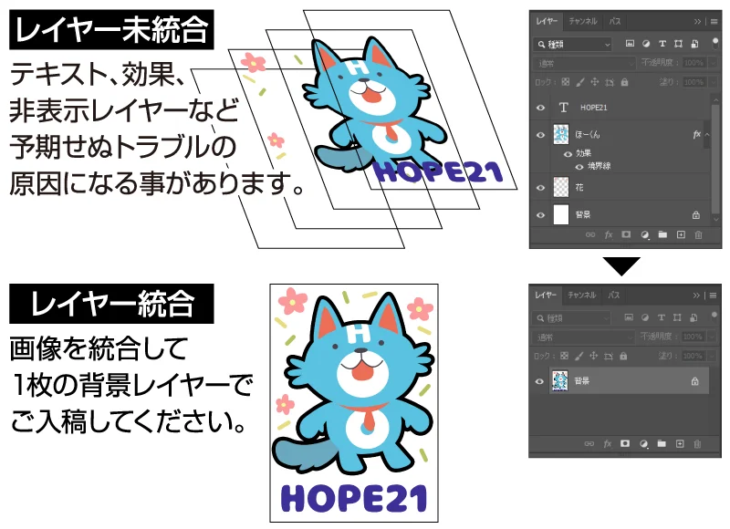
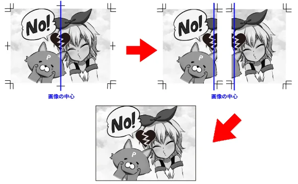
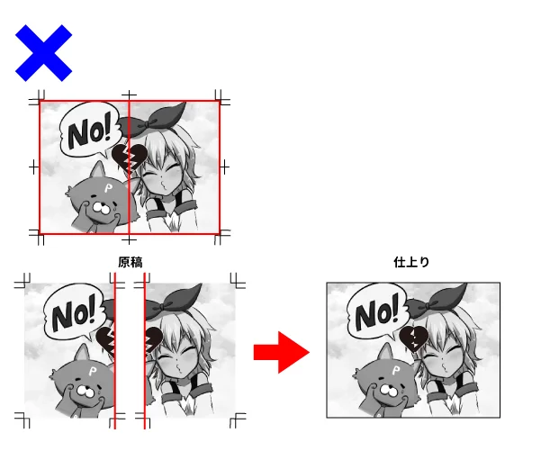
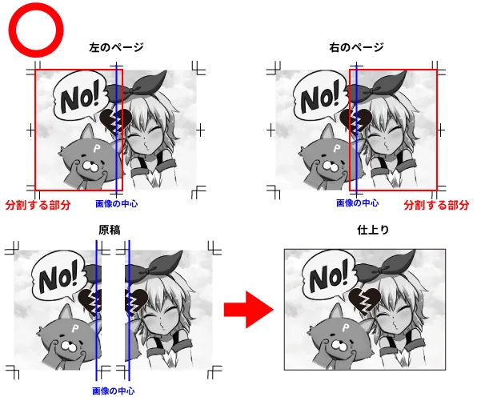

原稿サイズについて
下記表で仕上がりサイズと原稿サイズをご確認ください
※下記表は塗り足し各5mmでの表記ですが、塗り足し各3mmでもご入稿いただけます
※下記の表紙サイズは、見開き（表紙・裏表紙が同一のデータ）での表記です。表紙・裏表紙が別々のデータの場合は
本文サイズをご参照ください
| 仕上がり サイズ | 【表紙】 原寸（+塗足各5） 単位＝mm | 【本文】 原寸（+塗足各5） 単位＝mm |
|---|---|---|
| A8 | 104×74 （114×84） | 52×74 （62×84） |
| B8 | 128×91 （138×101） | 64×91 （74×101） |
| 文庫 | 210×148 （220×158） | 105×148 （115×158） |
| 新書 | 212×173 （222×183） | 106×173 （116×183） |
| B6 | 256×182 （266×192） | 128×182 （138×192） |
| A5 | 297×210 （307×220） | 148×210 （158×220） |
| B5 | 364×257 （374×267） | 182×257 （192×267） |
| A4 | 420×297 （430×307） | 210×297 （220×307） |
トンボの作成と断ち切り位置付近のイメージに関する注意事項

トンボとは、印刷の合わせ・断裁位置の目印のために作成するガイド線を指します。上記の表にある「原寸＋塗り足し」のサイズで作成されたデータであれば、トンボは必須ではございません。
「イメージの中心がキャンバスの中央に配置されていないデータ」である場合は、トンボが必要です。
①仕上がり（原寸）の位置（イメージの四隅に作成）
②上下左右の中央位置（イメージの上下左右に作成）
に上記画像のようにガイド線をお付けください。
トンボの作成・原稿データの配置のみを目的としたIllustratorの使用は極力お控えください。エラーの原因となります。
トンボ（ガイド線）が印刷範囲（原寸＋塗り足しの範囲）に入らないようご注意ください。製本仕上がり時にトンボの線が入り込むおそれがあります。

実際の本の寸法に断裁する位置を「断ち切り（タチキリ）」といい、トンボの内側の線が目印（断ち切り線）となります。切れては困る文字や図柄は、これより2mm以上内側に入れてください。
意図的なデザインとしてイメージを切れさせたい場合や白場を出したい場合は、入稿時に「データ制作備考欄」にその旨をご記入ください。
塗り足しに関する注意事項

断ち切り位置に絵や文字がかかるイメージでは、原寸サイズぴったりで作成した場合、断裁時に白場が出るおそれがあります。
白場を出したくないイメージでは、断ち切り位置（原寸サイズ）の外側上下左右に「3～5mm程度の塗り足し部分」を作成いただき、塗り足し部分いっぱいまでイメージを描いてください。
意図的なデザインとしてイメージを切れさせたい場合や白場を出したい場合は、入稿時に「データ制作備考欄」にその旨をご記入ください。
背幅計算について
塗り足しを原稿データの上下左右に3mm又は5mmずつ作っていただいている場合、本文30ページ程度であれば、背幅の作成は必要ございません。
本文のページ数や本文用紙によって背幅が必要となる場合は、表紙サイズに背幅を加算したデータを作成ください。
背幅は製本時の糊や用紙の製造ロットによって多少の誤差が生じますことをご了承ください
背幅あり表紙サイズ（見開き）の計算方法
（表紙原寸＋上下左右に各3or5）mm＋背幅 mm
「表紙原寸＋塗り足し」のサイズは、上記表をご参照ください
「背幅」の計算方法は以下をご参照ください
背幅の計算方法
本文ページ数÷20×使用する紙の厚さ（下記表参照）＝背幅（mm）
背幅計算ツール
本文用紙と本文ページ数を選択すると、背幅が自動で計算されます
| 紙の種類 | 紙の厚さ |
|---|---|
| 書籍紙72.5kg | 1.0 |
| マットコート90kg | 1.0 |
| ナチュラル・色上質 厚口 | 1.2 |
| 上質90kg | 1.3 |
| コミックルンバ／ 上質110kg | 1.5 |
例）
表紙込み44ページの本を
本文用紙コミックルンバで作成する場合
40÷20×1.5＝3mm 背幅は3mmとなります
背幅が2mmでしたら、背文字等が入るデザインでなければ
特に背幅を作成されなくても 問題はございません。
- カバーの背幅計算
-
上記計算式で出た背幅＋1mm
- 帯の背幅計算
-
カバーあり：上記計算式で出た背幅＋2mm
カバーなし：上記計算式で出た背幅＋1mm※帯オプションはのせのせ黄金ブロックでご利用いただけます
推奨解像度について
| フルカラー | 350dpi |
| グレースケール | 600dpi |
| モノクロ２階調 | 600dpi |
推奨解像度以上の解像度でご入稿いただいても、データの容量が重くなるだけで 画像に反映されることはありません。また、元画像の解像度が初めから低い場合 低い解像度から高い解像度に設定を直しても画像には反映されませんのでご注意ください。
オンデマンド印刷の場合は、モノクロ二階調の解像度は600dpiで作成をお願いします
表紙データについて
表紙は見開きで作成していただいても、表1と表4を分けて作成していただいても問題ございません。 見開きで作成される場合は、左右の表紙配置を間違われないようご注意ください。
右綴じの場合、見開きの左側が表1となります。左綴じの場合はその逆となり、見開きの右側が表1になります。
ファイル名は 「hyoushi」でも「表紙」でも結構です。
表1と表4を別々に作成される場合は 「hyoushi1」「hyoushi4」など、どちらが表1・表4なのか分かるようにファイル名をつけてください。
墨刷（モノクロ印刷）の原稿作成について
オフセット印刷、オンデマンド印刷、どちらの原稿も黒のみでデータを作成ください。ファイルの画像モードは「グレースケール」または「モノクロ二階調」のどちらかでお願いします。
墨刷（モノクロ印刷）では、原稿の画像モードがCMYK・RGBの場合、グレー部分が作成イメージと濃度が異なる出力になります
単色・多色刷りの原稿作成について
- 単色（1色）刷り
-
- オフセット
黒のみ（グレースケール、モノクロ2階調どちらでも可）でデータを作成いただき、発注時に刷色をご指示ください。
- オンデマンド
「モノクロ（グレースケール、モノクロ2階調）」以外は全てフルカラー印刷となります。
例えば、オンデマンドで赤１色の表紙にしたい場合は、データ自体を赤1色で作成してください。 - 原稿多色（2色以上）刷り原稿
-
- オフセット
黒100％（グレースケール、モノクロ2階調どちらでも可）でデータを作成いただき、発注時に刷色をご指示ください。
原稿は「刷色ごとにファイルを分ける」「レイヤーで分ける」どちらの方法で作成していただいても問題ございません。 いずれの場合も、どの色で刷るのかわかるよう、ファイル名・レイヤー名をつけてください。
- オンデマンド
「モノクロ（グレースケール、モノクロ2階調）」以外は全てフルカラーとなります。
多色刷りのような表紙を希望される場合、ご自身でフルカラーで作成してください。
本文データとファイル名について
・本文データのファイル名は「本文のノンブル（ページ番号）」で設定してください
本文のファイル名に本のタイトルを入れていただく必要はございません。
例）本文3ページのPhotoshop（.psd）データ ⇒ 03.psd

WordやInDesignのように1つのファイルに複数ページが保存されるものは、そのファイルに含まれているページ範囲をファイル名としてください。
例）本文3ページ～26ページのpdfデータ ⇒ 03-26.pdf

・入稿時、異なるアプリケーションで作成したデータが混在していても問題ございません
ファイル名は必ず通しでつけていただき、「前書き」「奥付」などをファイル名にはしないでください。
例）「03.psd」「04-25.docx」「26.psd」

・本文を見開きで作成されたデータは、1ページずつ分けた状態でご入稿ください
本文のノンブル（ページ番号）とファイル名の数字が一致しない場合、乱丁の原因となります。
ファイル名の間違いにより乱丁となった場合、弊社では一切クレームは受付いたしません。
データチェックは本文ノンブルとファイル名をチェックするためのものではありません。ファイル名が間違っていた場合、弊社では気がつかない場合もございますので、必ずご自身で確認してからご入稿をお願いいたします。
ノンブル(ページ番号)について
- 本文原稿の場合、タチキリ位置より5ミリ以上内側にノンブルを入れてください
- ノンブルの大きさは、出力時に肉眼で見える程度の大きさ（6pt以上）であれば問題ありません
- 隠しノンブルの場合、タチキリ線ギリギリに寄せるなどして、タチキリ外に出ないようにお願いします。また、ノンブルの位置が左右逆にならないようにお願いします
- ノンブルの無いページは、出力見本の余白に目立つようにページ数を記載してください
- ノンブルの無い原稿についての乱丁・落丁クレームは受け付けません
レイヤーの統合について
画像データのレイヤーは、原則すべて統合してご入稿ください。
一部の「セット」・「グッズ」・「追加オプション」では、レイヤーの分け方について指定があるものがございます。
データ作成の際は必ず、発注される商品の詳細ページをご確認いただき、特に指定が無い場合はレイヤーを統合してご入稿ください。

- CLIP STUDIO PAINT PRO
-
「ファイル」→「画像を統合して書き出し」→「.psd（Photoshopドキュメント）」
- CLIP STUDIO PAINT EX
-
「ファイル」→「複数ページ書き出し」→「一括書き出し」→ファイル形式を「.psd（Photoshopドキュメント）」にした後「画像を統合して書き出す」にチェックを入れてください
- Photoshop
-
ご入稿用にデータを複製し、その後「レイヤー」→「画像を統合」、またはレイヤーパレットのオプションメニューから「画像を統合」を選択してください
※書き出し後、変換後のデータは必ずご確認いただきますようお願いいたします
見開きページ原稿の作成について

本文2ページ分を見開きページに仕上げる場合、綴じ側3～5mmのイラストが左右のページで重なるように「1ページ＝1ファイル（単ページ）」にしてご入稿ください。
見開きページの作成方法は「無線綴じ」「中綴じ」「共紙本」いずれも同じです
見開きページ原稿を1つのファイルで作成された場合の分割方法

中央から分割

綴じ側を重ねて分割
画像を左右に分割し、2ページ分の単ページデータを作成します。
画像の中央から半分に分割すると、製本時に綴じ側の塗り足し部分（3～5mm）が隠れ、絵柄がずれて見えてしまうため、綴じ側3～5mmのイラストが左右のページで重なるように分割してください。
アナログ原稿について
- アナログ原稿は弊社にてデータ化を行い、印刷します。トーンやセリフ等は、しっかりとはがれないように貼っていただくようお願いいたします
- データ原稿とアナログ原稿の混在入稿も可能です。アナログとデータが混在する場合は原稿と一緒に 台割をつけてご入稿ください